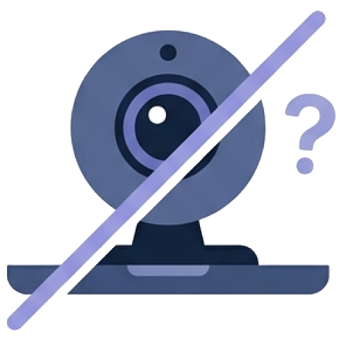
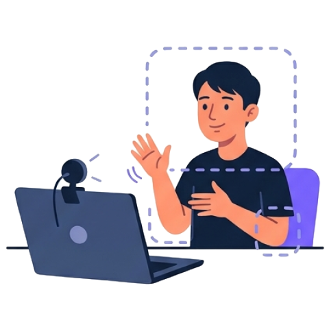
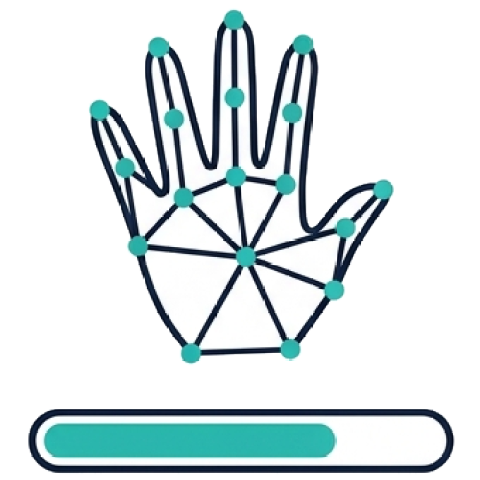

Inicio
Cámara
Modelo
Avatar
K'ab T'aan
En maya: «lengua de manos»
Lengua de Señas Mexicana a texto, voz y avatar.
Para conversaciones cortas entre una persona Sorda y una oyente.

Buscando la cámara…
El avatar repite cada seña reconocida y dice en señas lo que escribe el interlocutor.
Seña reconocida
Esperando una seña…
Traducción
Haz una seña: levanta las manos, hazla y bájalas.
El interlocutor dice
Buscando la cámara…
Grabar una seña
0muestras de
La seña se hace con
Con la grabación activa, cada seña (manos arriba → manos abajo) se guarda sola. Si la seña es de una mano, la otra puede quedarse abajo: no se graba.
Señas grabadas
Buscando la cámara…
El avatar te imita en vivo.
Grabar el movimiento de una seña
Sin palabraEscribe la palabra y pulsa Elegir
La seña se hace con
Empieza y termina con los brazos abajo. Al terminar, revisas la toma y la recortas antes de guardarla.
Revisa la toma de «»
Arrastra los extremos para dejar solo la seña. Mientras arrastras, el avatar muestra ese instante.
0 s
Movimientos grabados

Cómo ponerte frente a la cámara
- A 1 metro, con cabeza, hombros, codos y manos a la vista. Si estás muy cerca, arriba aparece Aléjate: no veo tus codos.
- Luz de frente, nada brillante detrás de ti.
- Cada seña: levanta las manos, hazla y bájalas. Al bajar las manos la seña termina.

Cómo enseñarle una seña nueva
- En Entrenar, escribe la palabra y tu nombre, y pulsa Empezar.
- Activa la grabación y haz la seña unas 20 veces (normal, lenta y rápida).
- Elige si la seña es de dos manos o de una. Con una mano, la otra puede quedarse abajo: no se graba y el avatar la deja quieta. La app lo recuerda para cada palabra.
- Pulsa Entrenar el traductor. Con más personas grabando, el traductor acierta más.
- En Avatar, graba una vez el movimiento de la palabra para que el avatar también la sepa hacer. Antes de guardarla, recorta la toma para dejar solo la seña.
Teclas
Espacio grabar / pausarZ deshacerM una / dos manos
Enter guardar la tomaEsc descartarla
V vozS micrófonoF pantalla completa